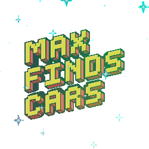

MaxFindsCars.com
The easiest way to find your dream car.
DevOps Lead, Creator of MaxFindsCars.com
Entrepeneurship & Early-Stage Business Development
Leadership & Mental Models
Human Optimization
Project Conception & Development
Applications Built w/ Generative AI
Motorsport & Automotive
Fitness & Weightlifting
I'm not actively looking for new roles at the moment, but feel free to reach out if you'd like to connect!
Email Me